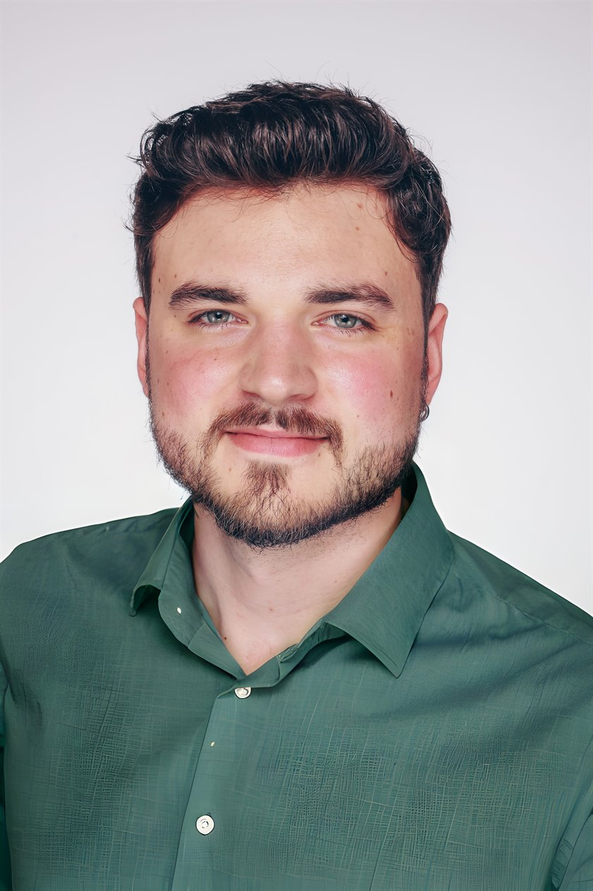

Analytisch & kritisch
Zusammenhänge verstehen, Annahmen hinterfragen und Informationen strukturiert aufbereiten.
Persönlich / Über mich
Ich bin Lukas. Mich interessiert, wie Menschen digitale Produkte erleben – und wie wir dieses Verständnis in bessere Entscheidungen übersetzen können.

Meine Perspektive
Technik begeistert mich. Noch spannender finde ich die Frage, was sie für die Menschen bedeutet, die sie nutzen.
Ich studiere Computing & IT mit Psychologie als zweitem Fach an der Open University. Die Kombination verbindet für mich zwei wichtige Perspektiven: Wie funktionieren digitale Systeme – und wie erleben, verstehen und nutzen Menschen sie?
Bei CARSYNC entwickle ich Dashboards, gestalte UI-Konzepte in Figma und arbeite an Datenmodellen und Plugins. Als freiberuflicher Webentwickler begleite ich außerdem eigene Kundenprojekte von der Anforderung bis zur Umsetzung.
Ich möchte diese Praxis künftig stärker mit empirischer Nutzerforschung verbinden. Besonders interessieren mich Mensch-Computer-Interaktion, Nutzungskontexte und die Frage, wie Research zu nachvollziehbaren Produktentscheidungen beiträgt.
Gute Gestaltung beginnt für mich mit dem Wunsch, das Problem wirklich zu verstehen.
Zusammenarbeit
Zusammenhänge verstehen, Annahmen hinterfragen und Informationen strukturiert aufbereiten.
Technische und gestalterische Perspektiven verbinden und gemeinsam mit Fachabteilungen an Lösungen arbeiten.
Verantwortung übernehmen, Feedback reflektieren und Wissen gezielt erweitern – im Beruf und im Fernstudium.
Ein guter Anfang ist eine gute Frage.
Ich möchte digitale Produkte durch ein besseres Verständnis von Menschen mitgestalten. Lernen wir uns kennen.
Ins Gespräch kommen